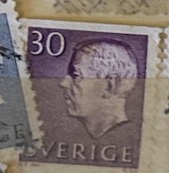
| SOURCE | TITLE| IMAGE MATCH | click to source page |
| Shutterstock | 40 Gustav Vi Adolf Royalty-Free Images, Stock Photos & Pictures | Shutterstock | 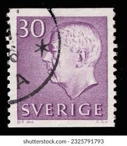 |
| HipStamp | Sweden 575 used SCV $ 0.20 (RS) | Europe - Sweden, General Issue Stamp / HipStamp | 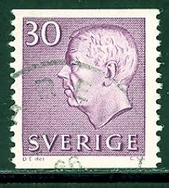 |
| eBay | Sweden Stamp Scott #583b, Used | eBay | 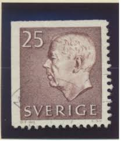 |
| digitaltmuseum.org | Forsberg, Karl-Erik (1914 - 1995) - DigitaltMuseum | 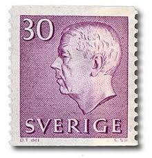 |
| PicClick IT | SVEZIA 1939/1942 - Usati 5/10/15/20/40 Öre Re Gustavo V #SVV EUR 1,30 - PicClick IT | 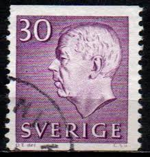 |
| HipStamp | Sweden #575 Gustaf VI Adolf Pair Used | Europe - Sweden, General Issue Stamp / HipStamp | 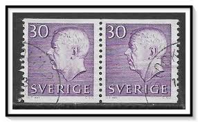 |
| Colnect | Stamp: King Gustaf VI Adolf (Sweden(King Gustav VI Adolf (White lettering)) Mi:SE 712A,Sn:SE 654A,Yt:SE 569A,Sg:SE 441d,AFA:SE 715,Fac:SE 437A,Un:SE 569A 📮 | 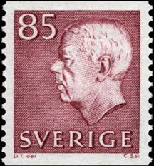 |
| efilatelija.lt | Guernsey stamps (1970) for sale. Agriculture and food industry | 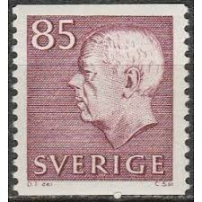 |
| lastdodo.com | 1964 King Gustaf VI Adolf type III Stamp catalogue - LastDodo |  |
| eBay | Green European Stamp Booklets for sale | eBay | 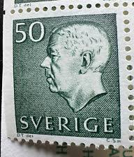 |
| Stampedia | stampedia SWEDEN STAMP catalog | 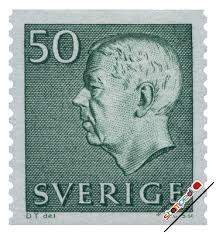 |
| Find Your Stamps Value | Value of sweden 50 ore gustaf stamps | 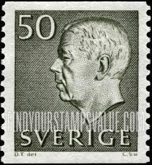 |
| PicClick UK | SWEDEN 1951 - King Gustav Vi Adolf - Fine Used 25 Ore Stamp £1.53 - PicClick UK | 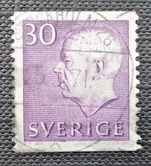 |
| Online Philately | F.437A, 85 öre Gustav VI Adolf, type III ** - Online Philately | 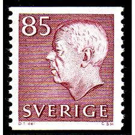 |
| eBay | Royalty Postage Swedish Stamps for sale | eBay |  |
| Shutterstock | June 24 2025 Jakarta Indonesia Postage Stock Photo 2648409095 | Shutterstock | 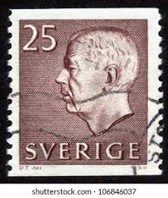 |
| Shutterstock | Sweden 1961 March 1 20 Öre Stock Photo 2367993325 | Shutterstock | 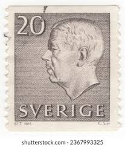 |
| Shutterstock | Sweden Circa 1947 Stamp Printed Sweden Stock Photo 103773044 | Shutterstock |  |
| Find Your Stamps Value | Value of 10 ore 1856 1956 sverige stamps | 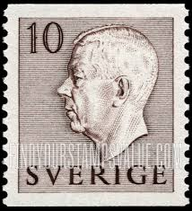 |
| Encyclopaedia Philatelica | Gustaf VI Adolf, kung, 1950-1973 - Encyclopaedia Philatelica | 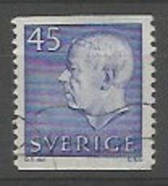 |
| Online Philately | F 393-508 - Online Philately | 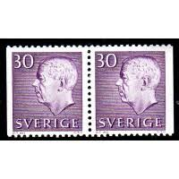 |
| HipStamp | Sweden SC#435 20õ King Gustaf VI Adolf (1952) OG/NH | Europe - Sweden, General Issue Stamp / HipStamp | 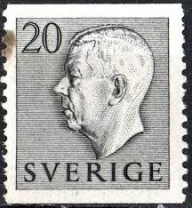 |
| Shutterstock | SUECIA - 1961 1 de marzo: Foto de stock 2367993325 | Shutterstock |  |
| allnumis.com | 30 öre 1957 - King Gustaf VI Adolf - with imprint, Royalty - Sweden - Stamp - 54919 | 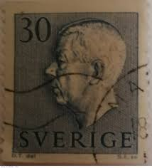 |
| Sweden 65ö "His Majesty the King Gustav VI Adolf" 1971. Czeslaw Slania sc. | 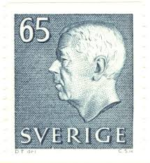 | |
| ebid.net | Sverige Sweden 1961 King Gustaf VI Adolf 40 ore Used Stamp on eBid United Kingdom | 190568387 | 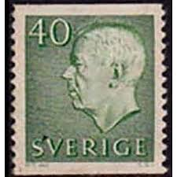 |
| Find Your Stamps Value | Value of sverige 20 ore stamps |  |
| eBay UK | Royalty Swedish Stamp Booklets for sale | eBay UK | 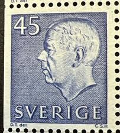 |
| Sweden 85ö "His Majesty the King Gustav VI Adolf" 1971. Czeslaw Slania sc. | 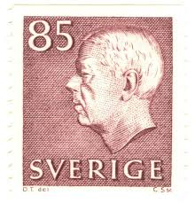 | |
| Find Your Stamps Value | Gustaf VI Adolf (Letters in color) 10o Dull green stamp price, value | 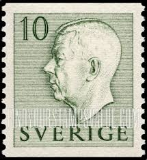 |
| Amazon.com | Amazon.com: Sweden 323A,Dl,Dr-324A (Complete.Issue.) unmounted Mint/Never hinged ** MNH 1946 Tegnér (Stamps for Collectors) : Toys & Games | 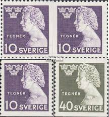 |
| HipStamp | Stamps Are Friends / HipStamp | 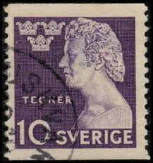 |
| Shutterstock | Sweden Circa 1951 1968 Stamp Printed Stock Photo 178028645 | Shutterstock |  |
| Find Your Stamps Value | Weltweiter Briefmarkenkatalog | 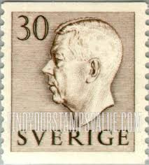 |
| Flickr | SW653 | King Gustaf VI Adolf | Vince DiNoto | Flickr | 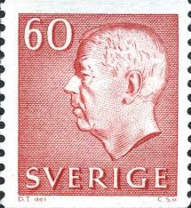 |
| Shutterstock | Sweden Circa 1961 Stamp Printed By Stock Photo 194063843 | Shutterstock | 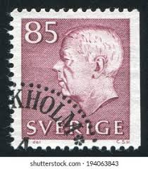 |
| 123RF | Stamp Printed In Czechoslovakia Shows General Milan Stefanik, Slovak Politician, Diplomat And Astronomer, Circa 1947 Stock Photo, Picture and Royalty Free Image. Image 171166061. | 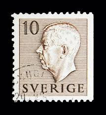 |
| HipStamp | Sweden 460 Used (11 | Europe - Sweden, General Issue Stamp / HipStamp | 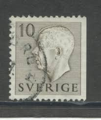 |
| Shutterstock | Sweden Circa 1951 1968 Swedish Postage Stock Photo 1507913798 | Shutterstock | 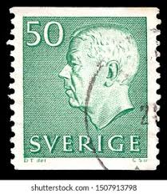 |
| Alamy | SWEDEN - CIRCA 1946: stamp printed by Sweden, shows Lund Cathedral, circa 1946 Stock Photo - Alamy | 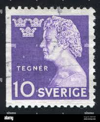 |
| Shutterstock | 2+ Hundred Gustaf Vi Adolf Sweden Royalty-Free Images, Stock Photos & Pictures | Shutterstock | 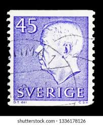 |
| Flickr | beautiful stamp Sweden 45 öre Gustaf Adolf VI. postage Bri… | Flickr | 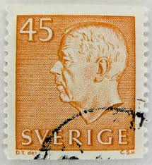 |
| Shutterstock | Headgear King: Over 448 Royalty-Free Licensable Stock Photos | Shutterstock | 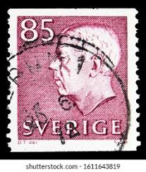 |
| Shutterstock | 2+ Thousand Swedish Man Isolated Royalty-Free Images, Stock Photos & Pictures | Shutterstock | 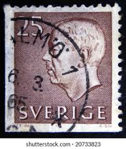 |
| TouchStamps | Stamp: King Gustaf VI Adolf (Sweden 1957) - TouchStamps | 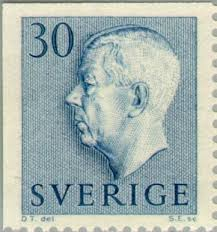 |
| Find Your Stamps Value | Value of sverige 15 ore stamps | 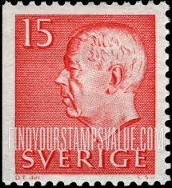 |
| Find Your Stamps Value | Value of colon 10 centavos chile stamps | 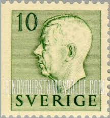 |
| Dreamstime.com | 116 Adolf Vi Stock Photos - Free & Royalty-Free Stock Photos from Dreamstime | 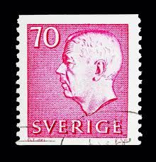 |
| HipStamp | Stamps Are Friends / HipStamp |  |
| Mystic Stamp | 514b - 1961 Sweden - Mystic Stamp Company | 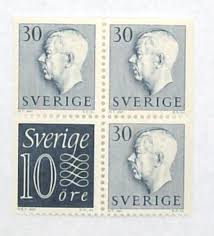 |
| Find Your Stamps Value | Value of sverige 55 stamps | 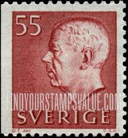 |
| Shutterstock | Sweden Circa 1970 Stamp Printed By Stock Photo 192221630 | Shutterstock | 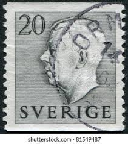 |
| The RainKey | Worldwide Stamps – Page 18 – The RainKey |  |
| Amazon.ca | Sweden 598Dl/Dr Couple unmounted Mint/Never hinged ** MNH 1968 Clear Brands (Stamps for Collectors), Printing & Stamping - Amazon Canada | 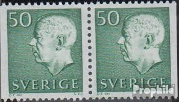 |
| iStock | Closeup Postage Stamp Sweden Stock Photo - Download Image Now - Abstract, Black Background, Black Color - iStock | 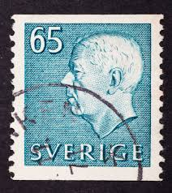 |
| eBay | SWEDEN #654A 1964 85c GUSTAF VI MINT VF NH O.G | eBay | 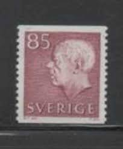 |
| Freestampcatalogue.com | Stamps from Sweden - Freestampcatalogue.com - The free online stampcatalogue with over 500.000 stamps listed. | 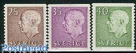 |
| Dreamstime.com | King Gustaf VI Adolf, Serie, Circa 1957 Editorial Image - Image of state, design: 117994250 | |
| Dreamstime.com | 02 11 2020 Divnoe Stavropol Territory Russia the Postage Stamp Sweden 1961 King Gustaf VI Adolf of Sweden Profile Portrait in Red Editorial Stock Image - Image of mailing, 1961: 181186604 |